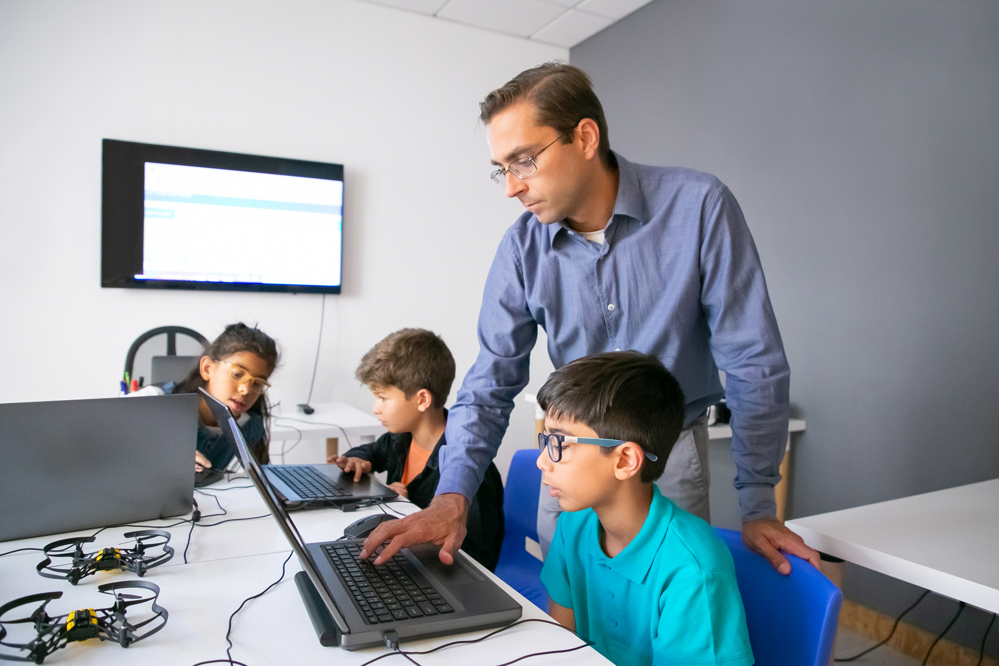
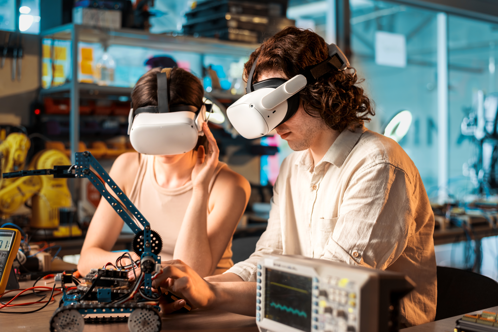
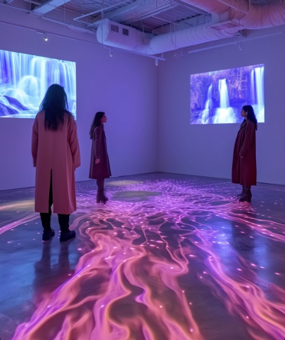
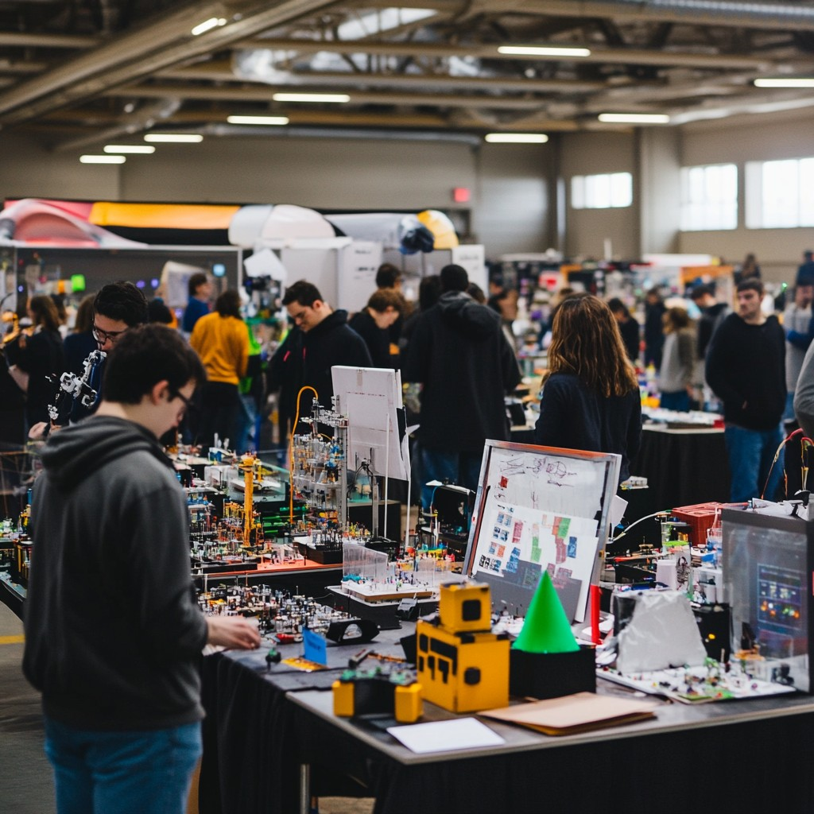

PROPÓSITO Y VISIÓN
La Feria de Innovación Tecnológica nace con una visión clara: redefinir la manera en que los estudiantes y profesionales de la tecnología conectan con las soluciones del futuro. Un espacio profesional, pero cercano, donde cada proyecto busca resolver problemáticas reales de nuestra sociedad.
Nos alejamos de las exposiciones tradicionales para dar paso a un entorno interactivo y colaborativo. Creemos que la verdadera diferencia está en el impacto social, en la aplicación práctica de la ingeniería y en la dedicación de cada equipo participante.
Nos enfocamos en exhibir prototipos funcionales, desarrollo de software, robótica y soluciones de telemedicina, destacando el rigor técnico que cada proyecto merece. Porque para nosotros, no se trata solo de programar, sino de cómo la tecnología mejora la calidad de vida.
Proyectos Destacados




¡TE ESPERAMOS EN LA FERIA!
Descubre cómo estas ideas cambiarán el mundo. Ingresa a la sección de CONTACTO si estás interesado en asistir o participar.